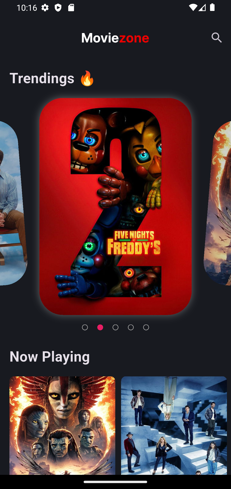
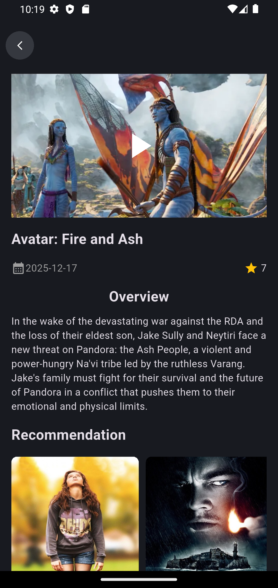
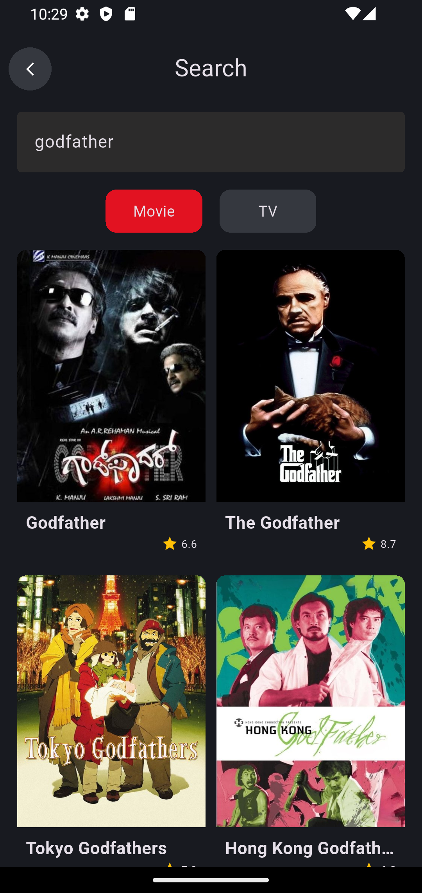

Proje Detayı
MovieApp: Clean Architecture ile Modern Film ve TV Dizisi Uygulaması
Flutter · Dart · Clean Architecture · BLoC/Cubit · get_it · dio · dartz · shared_preferences · video_player · chewie · youtube_player_flutter · flutter_svg


Kısa Özet
Bu projede, Clean Architecture prensiplerine uygun bir mobil uygulama geliştirdim. Kullanıcıların film ve TV dizilerini keşfedebileceği, fragman izleyebileceği ve detaylı bilgilere erişebileceği bir platform oluşturdum. Projede, iş mantığını UI'dan tamamen ayırarak sürdürülebilir ve test edilebilir bir yapı kurdum. Feature-based modüler yapı sayesinde her özellik bağımsız geliştirilebilir ve bakımı kolay hale geldi.
Projenin Amacı
Bu çalışmayı gerçekleştirirken temel hedefim, Clean Architecture'ın pratikte nasıl uygulanacağını göstermek ve gerçek dünya senaryolarında kullanılabilecek bir mimari yapı oluşturmaktı. Genellikle mobil uygulamalarda UI ve business logic birbirine karışır; ben ise bu projede Data, Domain ve Presentation katmanlarını net bir şekilde ayırarak, her katmanın kendi sorumluluğuna odaklanmasını sağladım.
Dartz kütüphanesinin Either yapısını kullanarak hata yönetimini functional programming yaklaşımıyla ele aldım. Böylece hem tip güvenliği sağladım hem de hata senaryolarını daha kontrollü yönetebildim. Ayrıca, get_it ile dependency injection kullanarak bağımlılıkları merkezi bir yerden yönettim ve test edilebilirliği artırdım. BLoC/Cubit pattern'i ile state management'ı reactive bir şekilde yöneterek, UI'ın her zaman doğru state'i yansıtmasını garanti altına aldım.
Dartz kütüphanesinin Either yapısını kullanarak hata yönetimini functional programming yaklaşımıyla ele aldım. Böylece hem tip güvenliği sağladım hem de hata senaryolarını daha kontrollü yönetebildim. Ayrıca, get_it ile dependency injection kullanarak bağımlılıkları merkezi bir yerden yönettim ve test edilebilirliği artırdım. BLoC/Cubit pattern'i ile state management'ı reactive bir şekilde yöneterek, UI'ın her zaman doğru state'i yansıtmasını garanti altına aldım.
Mimari & Yapı
Uygulama Clean Architecture prensiplerine uygun olarak üç ana katmana ayrıldı:
Data Katmanı: API servisleri (DioClient ile HTTP istekleri), JSON modelleri ve repository implementasyonları. Bu katmanda, backend'den gelen ham verileri parse edip domain katmanına uygun entity'lere dönüştüren mapper'lar bulunuyor. Authorization ve Logger interceptor'ları ile tüm network isteklerini merkezi bir yerden yönetiyorum.
Domain Katmanı: Entity'ler (saf Dart sınıfları), repository interface'leri ve UseCase'ler. Bu katman tamamen platform bağımsız ve hiçbir dış bağımlılık içermiyor. Her iş akışı için ayrı UseCase oluşturarak Single Responsibility Principle'a uygun hareket ettim. Abstract UseCase sınıfı ile tüm use case'lerin aynı kontratı takip etmesini sağladım.
Presentation Katmanı: UI bileşenleri, sayfalar ve BLoC/Cubit ile state yönetimi. Her feature kendi presentation katmanına sahip ve widget'lar modüler bir şekilde organize edildi. Generic Data Cubit ile tekrar eden state management mantığını ortak bir yapıya taşıdım.
Core: Uygulama genelinde kullanılan konfigürasyonlar (tema, renkler, network ayarları, API URL'leri), temel entity'ler ve helper sınıflar. Bu katman, tüm feature'ların ortak kullandığı altyapıyı sağlıyor.
Feature-based modüler yapı sayesinde auth, movie, tv, search, watch ve home gibi her özellik kendi klasöründe, kendi data-domain-presentation katmanlarıyla organize edildi. Bu sayede proje büyüdükçe yönetilebilirliği korudum ve her geliştirici farklı feature'lar üzerinde bağımsız çalışabildi.
Data Katmanı: API servisleri (DioClient ile HTTP istekleri), JSON modelleri ve repository implementasyonları. Bu katmanda, backend'den gelen ham verileri parse edip domain katmanına uygun entity'lere dönüştüren mapper'lar bulunuyor. Authorization ve Logger interceptor'ları ile tüm network isteklerini merkezi bir yerden yönetiyorum.
Domain Katmanı: Entity'ler (saf Dart sınıfları), repository interface'leri ve UseCase'ler. Bu katman tamamen platform bağımsız ve hiçbir dış bağımlılık içermiyor. Her iş akışı için ayrı UseCase oluşturarak Single Responsibility Principle'a uygun hareket ettim. Abstract UseCase sınıfı ile tüm use case'lerin aynı kontratı takip etmesini sağladım.
Presentation Katmanı: UI bileşenleri, sayfalar ve BLoC/Cubit ile state yönetimi. Her feature kendi presentation katmanına sahip ve widget'lar modüler bir şekilde organize edildi. Generic Data Cubit ile tekrar eden state management mantığını ortak bir yapıya taşıdım.
Core: Uygulama genelinde kullanılan konfigürasyonlar (tema, renkler, network ayarları, API URL'leri), temel entity'ler ve helper sınıflar. Bu katman, tüm feature'ların ortak kullandığı altyapıyı sağlıyor.
Feature-based modüler yapı sayesinde auth, movie, tv, search, watch ve home gibi her özellik kendi klasöründe, kendi data-domain-presentation katmanlarıyla organize edildi. Bu sayede proje büyüdükçe yönetilebilirliği korudum ve her geliştirici farklı feature'lar üzerinde bağımsız çalışabildi.
Görseller / Ekran Görüntüleri





